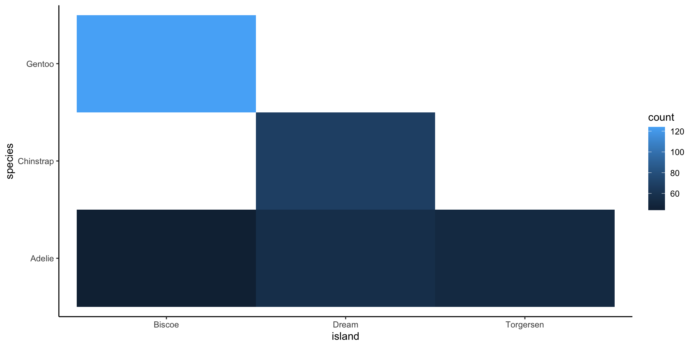

Rows: 4
Columns: 2
$ ethnicity <fct> White, Asian, Black, Other
$ perc_census <dbl> 96.0, 2.7, 1.0, 0.3Seminar 09
MA22004
Dr Eric Hall • ehall001@dundee.ac.uk
2024-11-13
Announcements
Attendance

Reminders
- Discuss (specifically
lm) at Thu workshop. - Discuss worksheet 9 at Fri workshop.
- Lab 6 due Fri 2024-11-15 at 17:00.
Special Announcement
EMS Invited Lecture will take place on
Friday, 15 Nov 2024, at 15:00 in Fulton F20
(tea served from 14:00 in common room)
Speaker: Prof Anna-Karin Tornberg, KTH Stockholm
Outline of today
- Goodness-of-fit tests using the \chi^2 distribution…
- … for a single factor
- … for independence of two factors
- How to use
Rto evaluate goodness-of-fit - Inferences for ANOVA
- Inferences for least squares models
Goodness-of-fit for a single factor
What is testing for goodness-of-fit?
- Evaluate distribution of one factor (AKA categorical variable) that has more than two levels (AKA categories)
- Compare observed distribution of the factor (i.e., proportion of sample in each level) to a hypothetical population distribution
- Uses \chi^2 distribution test statistic to decide if the deviation is statistically significant
Example: Ethnicity in Scotland
Consider the breakdown of population by ethnicity (simplified) from Scotland’s Census 2011.
Level up
To use levels the variable (here ethnicity) needs to be of type factor (<fct>). To coerce strings into factors: census$ethnicity <- factor(census$ethnicity).
Example: Prison population
Ethnicity is not a factor that predisposes one to commit a crime. Therefore, we would expect the prison population of Scotland to mirror the true population of Scotland.
Suppose we collected a sample of observations of ethnicity from the prison population.
Tip
Could we make an inference to decide if the observed difference in the ethnicity of the prison population was significant or due to chance variation?
Example: Prison population
To compare the distribution of ethnicity from a sample of the prison population to the distribution of ethnicity in Scotland, we consider a hypothesis test.
H_0 (nothing going on - the data is consistent with the specified reference distribution): The prison population is a simple random sample from the total population. The observed counts of prisoners by ethnicity follow the same ethnicity distribution as population.
H_a (something is going on, AKA our research question - the data is NOT consistent with the specified reference distribution): The prison population is not a simple random sample from the total population. The observed counts of prisoners by ethnicity do not follow the same ethnicity distribution as population.
How do we evaluate these hypothesis?
- Quantify how different the observed counts are from the expected counts.
- Large deviations from what would be expected based on sampling variation alone would be strong evidence against H_0.
Goodness-of-fit test
How well do the observed data fit expected distribution?
| Ethnicity | % Population (Census) | Proportion | Expected |
|---|---|---|---|
| White | 96.0 | 0.960 | |
| Asian | 2.7 | 0.027 | |
| Black | 1.0 | 0.010 | |
| Other | 0.3 | 0.003 | |
| Total | 100.0 | 1.000 | 2000 |
Conditions
Independence - sample observations must be independent
- Random sampling
- If sampling w/o replacement, m < 10% population
- Each factor only contributes to one scenario (cell) in table
Sample size
Each scenario (cell) must have at least 5 expected cases
Anatomy of a test statistic
General form of test statistic
\frac{\text{point estimate} - \text{null value}}{\text{SE of point estimate}}
- Identify difference between a point estimate and expected value assuming null hypothesis is true.
- Standardizes the difference using the standard error of the point estimate.
Goodness-of-fit statistic
\sum_{i=1}^{k} \frac{(O_i - E_i)^2}{E_i} = V \qquad \sim \chi^2(k-1)
Why square?
- Positive standardized difference
- Unusual differences become even more unusual.
Recall the \chi^2 distribution

Degrees of freedom (df) influences the shape, center and spread of distribution.
Example: sample data
A random sample of 2000 inmates in year 2011-2012 yields:
| Ethnicity | % Population (Census) | Expected | Observed |
|---|---|---|---|
| White | 96.0 | 1920 | 1925 |
| Asian | 2.7 | 54 | 52 |
| Black | 1.0 | 20 | 9 |
| Other | 0.3 | 6 | 14 |
| Total | 100.0 | 2000 | 2000 |
Compare observed sample to hypothetical expected distribution to understand if the observed differences are due to chance variation alone.
Example: calculating test statistic
| Expected | Observed | Normalized squared deviations |
|---|---|---|
| 1920 | 1925 | |
| 54 | 52 | |
| 20 | 9 | |
| 6 | 14 |
P-value
The P-value is always positive and a higher value of the test statistic means larger deviations from the null hypothesis.
The P-value is given by the tail area to right of calculated statistic.
Since P-value of p = 0.00078 \ll 0.05 = \alpha we would reject the null hypothesis at 0.05 level.
The data provide sufficient evidence that the prison population of Scotland is not representative of the general population.
Using R for Goodness-of-fit for a single factor
Rows: 4
Columns: 2
$ obs <dbl> 1925, 52, 9, 14
$ perc_census <dbl> 96.0, 2.7, 1.0, 0.3Independence of two factors
Recall penguin data
The Palmer penguin data records species (a factor with three levels) and island (a factor with three levels).
Rows: 344
Columns: 8
$ species <fct> Adelie, Adelie, Adelie, Adelie, Adelie, Adelie, Adel…
$ island <fct> Torgersen, Torgersen, Torgersen, Torgersen, Torgerse…
$ bill_length_mm <dbl> 39.1, 39.5, 40.3, NA, 36.7, 39.3, 38.9, 39.2, 34.1, …
$ bill_depth_mm <dbl> 18.7, 17.4, 18.0, NA, 19.3, 20.6, 17.8, 19.6, 18.1, …
$ flipper_length_mm <int> 181, 186, 195, NA, 193, 190, 181, 195, 193, 190, 186…
$ body_mass_g <int> 3750, 3800, 3250, NA, 3450, 3650, 3625, 4675, 3475, …
$ sex <fct> male, female, female, NA, female, male, female, male…
$ year <int> 2007, 2007, 2007, 2007, 2007, 2007, 2007, 2007, 2007…Two factors: island and species
The counts of data in each factor are used to generate a contingency table.
island Adelie Chinstrap Gentoo
Biscoe 44 0 124
Dream 56 68 0
Torgersen 52 0 0janitor::tabyl makes creating contingency tables easier.
The chisq.test can be applied to contingency tabyls.
Are island and species independent?
Hypothesis for independence
H_0: \; p_{ij} = p_{i} \cdot p_{j} \; \forall (i,j), i.e. the two factors are independent (the joint distribution can be factored into product of marginals).
H_a: H_0 is false, i.e. the two factors are associated.
Calculation of \chi^2 test statistic
Follows by considering the normalized squared deviations of the expected cell counts in the contingency table.
Using R for Goodness-of-fit for independence
Pearson's Chi-squared test
data: tabyl(penguins, island, species)
X-squared = 299.55, df = 4, p-value < 2.2e-16The data provide very strong evidence (p < 10^{-16}) to reject the null hypothesis. Species and island are associated.
Inferences for ANOVA
What hypothesis does ANOVA test?
The setting: Linear functions of means
- Your sample has m observations in total.
- Your problem has k populations with means \mu_1, \dots, \mu_k (and equal variances).
- Suppose your ANOVA test is statistically significant.
Parameter of interest (linear function of means):
\theta = \sum_{i=1}^k c_i \mu_i\,, for constants c_i, i=1,\dots,k.
100(1-\alpha)\% CI for \theta
\sum_{i=1}^k c_i \bar{x}_i \pm t_{\alpha/2, m-k} \cdot \left(\mathsf{MSE} \sum_{i=1}^k \frac{c_i^2}{m_i}\right)^{1/2}
This uses \mathsf{MSE} as an estimator for population variance in \mathsf{se}(\hat{\theta}) and \mathsf{t}(m-k) as the sampling distribution for \hat{\theta}.
Example: ANOVA UK average salary
Average salary data from 20 local councils. Is the mean average salary in each nation the same at 5% significance level?
| Nation | Average salaries ('000 £) | Size | Sample Mean | Sample SD |
|---|---|---|---|---|
| England | 17, 12, 18, 13, 15, 12 | 6 | 14.5 | 2.588 |
| N Ireland | 11, 7, 9, 13 | 4 | 10.0 | 2.582 |
| Scotland | 15, 10, 13, 14, 13 | 5 | 13.0 | 1.871 |
| Wales | 10, 12, 8, 7, 9 | 5 | 9.2 | 1.924 |
90\% CI for (\mu_{Eng} - \mu_{Sco})
What we know:
m = 20 obs, k=4 groups, with “unequal” design: m_{Eng} = 6 and m_{Sco} = 5.
Sample means: \hat{\mu}_{Eng} = 14.5 and \hat{\mu}_{Sco} = 13.0.
\mathsf{MSE} = 5.14375 from ANOVA output.
Critical value:
Putting it all together…
Inferences for least squares models
What parameters can inferences be made for in a least squares model?
The setting: Least squares model
Simple linear regression model for response Y with explanatory var X: Y = \beta_0 + \beta_1 X + \epsilon \,.
Fitted (least squares) line: \hat{y} = \widehat{\beta}_0 + \widehat{\beta}_1 x \,.
Note
- Inferences for \sigma^2, variance of random deviation in model (i.e., variance of \epsilon_i)
- Inferences for \beta_0 and \beta_1
- Prediction intervals for Y given x
Inferences for \sigma^2
Point estimate S^2 = \frac{\mathsf{RSS}}{m-2}
CI and H-Test use: (m-2) \frac{S^2}{\sigma^2} \sim \chi^2(m-2)
RSS (residual sum of squares i.e. sum of the squares of residuals)
H-tests for \beta_i
Null hypothesis H_0 : \beta_i = \beta_{i0}.
T test: T = \frac{\widehat{\beta}_i - \beta_{i0}}{S \sqrt{c_{ii}}} where c_{11} = 1/S_{xx} and c_{00} = (\sum x_i^2)/(m S_{xx}).
P values are areas under \mathsf{t}(m-2).
100(1-\alpha)\% CI for \beta_i
\widehat{\beta}_i \pm t_{\alpha/2, m-2} S \sqrt{c_{ii}} where c_{11} = 1/S_{xx} and c_{00} = (\sum x_i^2)/(m S_{xx}).
Prediction Interval for Y
Prediction interval for a value of Y when x = x^* is given by (\widehat{\beta}_0 + \widehat{\beta}_1 x^*) \pm t_{\alpha/2, m-2} S \sqrt{1 + \frac{1}{n} + \frac{(x^* - \bar{x})^2}{S_{xx}}}
This is not the same as the confidence interval for expected Y.
The prediction interval is “wider” than the equivalent confidence interval!
Bonus

Example: Palmer penguins
Example: Fit of body mass on species
Call:
lm(formula = body_mass_g ~ species, data = penguins)
Residuals:
Min 1Q Median 3Q Max
-1126.02 -333.09 -33.09 316.91 1223.98
Coefficients:
Estimate Std. Error t value Pr(>|t|)
(Intercept) 3700.66 37.62 98.37 <2e-16 ***
speciesChinstrap 32.43 67.51 0.48 0.631
speciesGentoo 1375.35 56.15 24.50 <2e-16 ***
---
Signif. codes: 0 '***' 0.001 '**' 0.01 '*' 0.05 '.' 0.1 ' ' 1
Residual standard error: 462.3 on 339 degrees of freedom
(2 observations deleted due to missingness)
Multiple R-squared: 0.6697, Adjusted R-squared: 0.6677
F-statistic: 343.6 on 2 and 339 DF, p-value: < 2.2e-16Example: Compare lm to aov…
Df Sum Sq Mean Sq F value Pr(>F)
species 2 146864214 73432107 343.6 <2e-16 ***
Residuals 339 72443483 213698
---
Signif. codes: 0 '***' 0.001 '**' 0.01 '*' 0.05 '.' 0.1 ' ' 1
2 observations deleted due to missingnessSummary
- Goodness-of-fit tests using the \chi^2 distribution…
- … for a single factor
- … for independence of two factors
- How to use
Rto evaluate goodness-of-fit - Inferences for ANOVA
- Inferences for least squares models
Today’s materials
Slides posted to https://dundeemath.github.io/MA22004-seminar09.